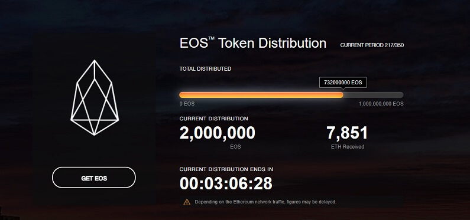

Mi az az EOS? Útmutató kezdőknek
EOS a decentralizált applikációk legerősebb infrastruktúrájává szeretne válni. Amióta Ethereum ilyen nagy figyelmet kapott, a Dapp ökoszisztéma hatalmas népszerűségre tett szert. Rengeteg applikáció építhető blokklánc technológiára, egyelőre még messze vagyunk tényleges potenciáljától. Ahogy egyre több fejlesztő foglalkozik a blokklánccal, egyre érdekesebbnek ígérkezik a jövő.
EOS célja, hogy egy decentralizált operációs rendszerré váljon amely ipari méretű decentralizált applikációkat képes támogatni.
EOS ICO-ja az első 5 napjában 185 millió dollárnyi ETH-t gyűjtöttek össze anélkül, hogy bármilyen termékük vagy szolgáltatásuk lenne. EOS egy Ethereum-hoz hasonló blokklánc technológia. A tervük, hogy létrehozzák a saját blokkláncukat.
Az EOS látomás
EOS egy szoftver lesz amely operációs rendszerként fog üzemelni. Fejlesztők applikációkat építhetnek az EOS szoftverre amely bővíthető és rugalmas lesz. A legfontosabb funkció amely mindenkit lázba hoz az a horizontális bővíthetőség. Ez azt jelenti, hogy az EOS blokklánc képes lesz okos szerződések párhuzamos végrehajtására és tranzakciók egyidejű feldolgozására.
Ez jelentősen megváltoztatná az erőviszonyokat és elválasztaná EOS-t a tömegtől, mert semelyik másik platform nem tudja ezt jelenleg, és nem is fogja tudni megtenni anélkül, hogy teljesen újraépítené a rendszerét.
Ethereum teljes rendszere megállt a DAO támadás miatt. EOS DPoS mechanizmust használ amely valószínűtlenné teszi ennek bekövetkezését. Ha egy Dapp hibás, a megválasztott blokk gyártók leállíthatják amíg a rendszert javítják.
EOS projektet a Block One cég fejleszti, amelynek vezetői Dan Larimer és Brendan Bloomer. Mindketten komoly tapasztalataik vannak a kripto világban. Dan Larimer alapította a decentralizált kriptopénz váltó Bitshares-t, valamint a közösségi média platform Steem-et amely blokklánc technológiára épült.
Ingyenes használat
Az EOS platformra épített applikáció nem követeli meg a végfelhasználóktól, hogy fizessenek az üzenetküldés és feladat végrehajtásért a blokkláncon. A szoftver fejlesztőkre van bízva, hogyan kezelik a tranzakciós díjakat, tehát a cégek amelyek az EOS-ra építkeznek létrehozhatják a saját bevételszerzési stratégiáikat és akár ingyenessé is tehetik a felhasználók számára.
Delegated Proof Of Stake (DPoS) megegyezési mechanizmus
Delegated Proof-of-Stake (DPoS) egy alternatív megegyezési mechanizmus amely megköveteli a token birtokosait, hogy szavazzanak 'képviselőkre' akik felelősek lesznek tranzakciók megerősítéséért és a blokklánc karbantartásáért.
DPoS egy alternatív megoldása a PoS mechanizmusnak amely megköveteli a hálózati csomópontoktól (node), hogy egy nagyobb összeget félretegyenek az adott kriptovalutából amely egyfajta biztosítékként szolgál. Ezáltal képesek lesznek megerősíteni a tranzakciókat, és ezért begyűjthetik a tranzakciós díjakat, mintha részvényesek lennének egy vállalatban.
DPoS mechanizmus egyik nagy előnye a hagyományos PoW rendszerhez képest, hogy nem szükséges hatalmas mennyiségű elektromos áram a fenntartásához. Nincs szükség speciális hardverekre, hogy komoly matematikai feladatokat oldjanak meg. Emellet DPoS rendszer jobban támogatja a decentralizációt is.
EOS token vásár
EOS token vásár teljesen egyedi módon történik. A teljes token vásár egy évig tart, 2017 Június 26-án kezdődött. 350 részre van osztva, minden rész végén az EOS tokenek kiosztásra kerülnek az ETH hozzájárulásuk alapján.
A vásár alatt a tokenek a legtöbb kriptopénz kereskedő oldalon is szerepelnek, tehát az árat a piac határozza meg. Ez mindenkinek lehetőséget ad a vásárlásra, és rengeteg időt ad, hogy valaki figyelemmel kísérje EOS fejlődését és haladását mielőtt hozzájárulna a projekthez. Ennek eredményeként EOS az egyik legnagyobb összegeket gyűjtött ICO-k között van.
Az EOS tokennek önmagában nincs funkciója és csak akkor lesz haszna ha a fejlesztők elkezdenek applikációkat fejleszteni az EOS platformon.
EOS vásárlás
EOS tokenek megvásárolhatók az ICO keretein belül eos.io weboldalon 2018. Június 18-ig. Részvételhez először szükség lesz egy Ethereum alapú tárcára némi ETH-al ellátva. Ilyen például a MyEtherWallet.
Eos.io weboldalon 'Get EOS' gomb nyomása után elfogadjuk a feltételeket. Ezután alul lemásoljuk a token elosztás Ethereum címét. MyEtherWallet-ről elküldjük az ETH-t amilyen mennyiségben tokent szeretnénk vásárolni.
Körülbelül 24 órán belül igényelheted a tokeneket, és regisztrálni kell, hogy meg kapd őket amint az ICO vásár befejeződik.
Ha ez bonyolult akkor kriptovaluta váltó oldalakon is meg lehet vásárolni mint Bitfinex és Binance. A tokeneket Metamask vagy MyEtherWallet segítségével lehet tárolni.
Záró gondolatok
Egyelőre még túl korai, hogy meg tudjuk mondani EOS teljesíteni fogja-e az ígéreteit vagy sem. Ha sikerül létrehozni a blokkláncot azokkal a funkciókkal amiket be szeretnének építeni akkor méltó ellenfele lehet Ethereum-nak. EOS mindenképpen egy izgalmas projekt a Dapp mezőnyben, meglehetősen jó csapattal a háttérben.


2018. Január 25.